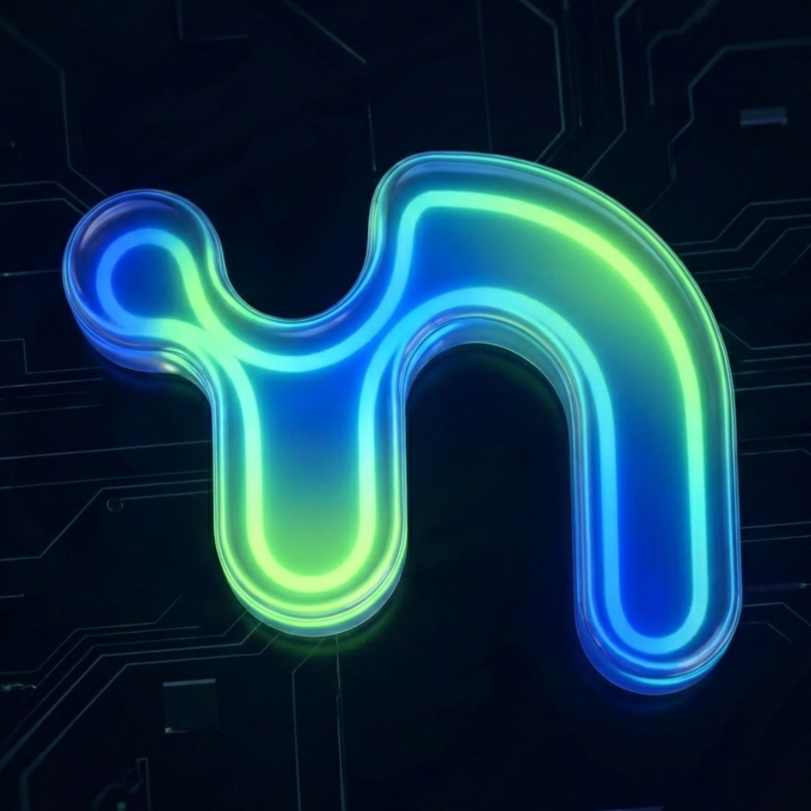
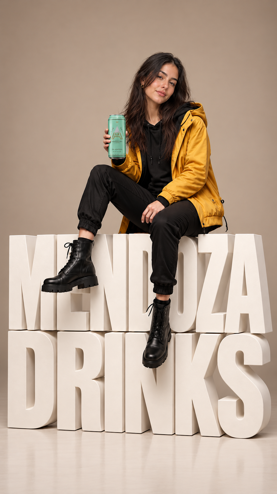
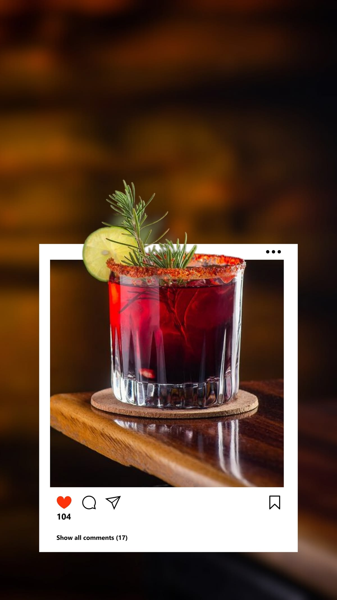
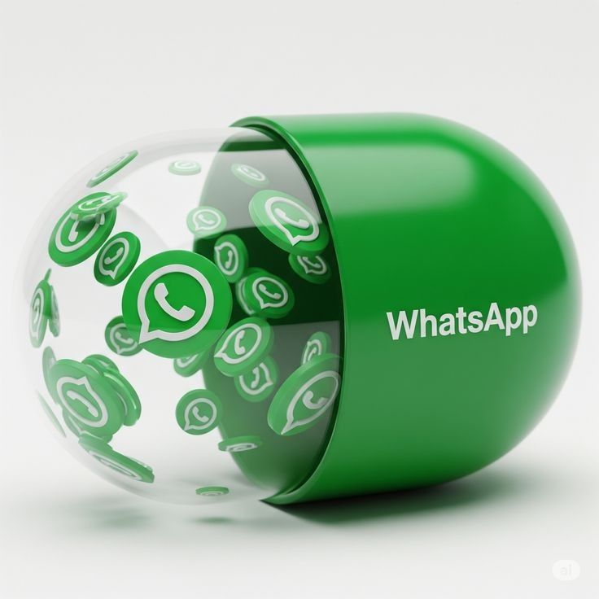
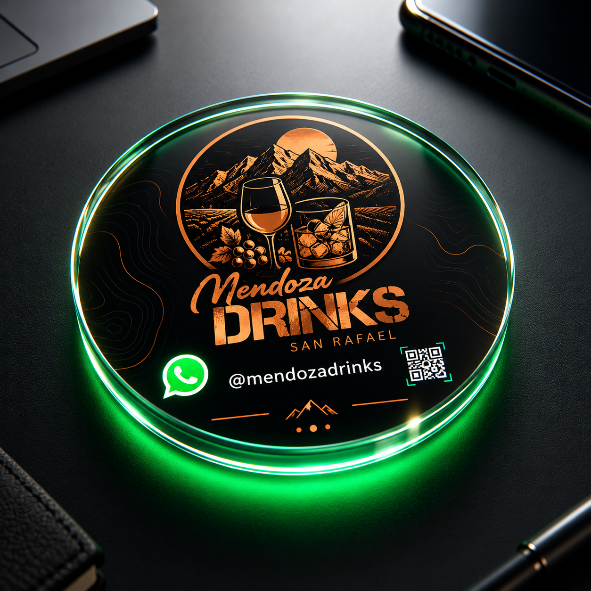
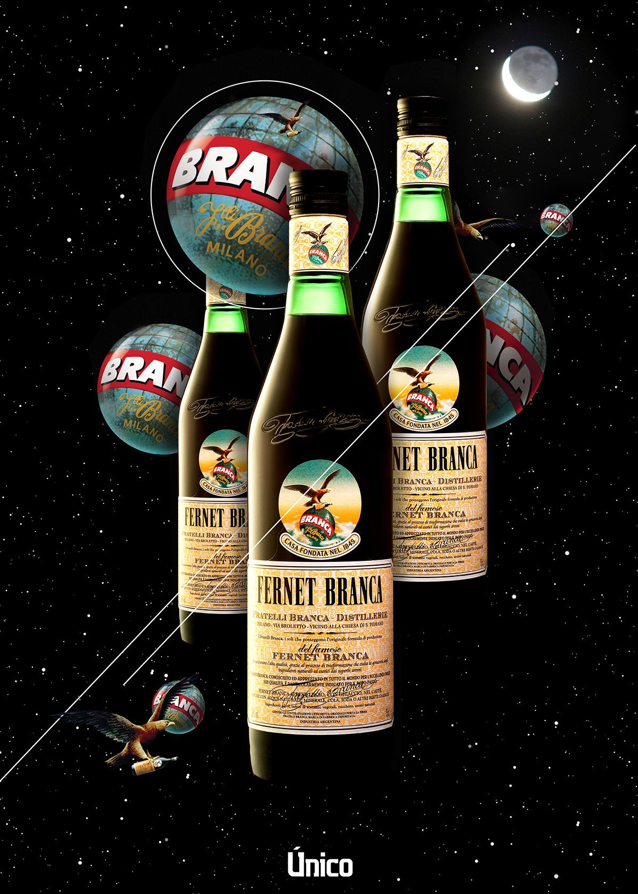
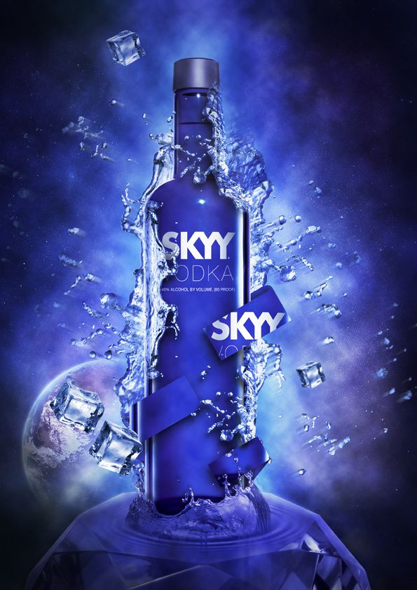

Texto y contexto
Interpreta consultas escritas y mantiene el hilo de la conversación.

NeuroTechSOLUCIONES Ver opciones ↗PROPUESTA EXCLUSIVA / MENDOZA DRINK
La identidad de Mendoza Drink.
La inteligencia de NeuroTech.
Juntas, en tu WhatsApp.
Un sistema de atención que conversa, acompaña a tus clientes y le devuelve tiempo a tu equipo.

02 / LA OPORTUNIDAD

Precios, productos, horarios, disponibilidad. Las consultas llegan durante todo el día.
El sistema responde las preguntas habituales con la información de Mendoza Drink y acompaña al cliente, incluso fuera del horario comercial.
Información disponible más allá del horario del equipo.
Más espacio para las situaciones que necesitan atención personal.
Respuestas alineadas con tus productos, tus criterios y tu identidad.
03 / LA EXPERIENCIA DEL CLIENTE
Escriben, mandan un audio o comparten una imagen. El agente interpreta la consulta y conserva el contexto de la conversación.

Interpreta consultas escritas y mantiene el hilo de la conversación.
Comprende notas de voz y también puede generar respuestas de voz.
Analiza contenido visual y documentos en formatos compatibles.
Espera cuando una persona envía varios mensajes consecutivos antes de responder.
04 / PERSONALIZACIÓN NEUROTECH
La calidad empieza por conocer cómo trabaja Mendoza Drink. Diseñamos una experiencia propia, con información autorizada y límites claros.
Analizamos las conversaciones anteriores que nos compartas para reconocer preguntas frecuentes y criterios de respuesta.
Productos, precios, horarios y condiciones comerciales aportados por Mendoza Drink.
Adaptamos el tono, el lenguaje y el comportamiento a la identidad de la empresa.
Si falta información o una consulta requiere atención especial, el equipo conserva el control.

05 / UN SISTEMA INTEGRAL
El agente atiende. Tu equipo gestiona. Todo, conectado.
Conectamos la atención con tu sistema de gestión para sumar informes, reportes y acciones proactivas según las funciones acordadas.
Compará las opciones ↗06 / IMPLEMENTACIÓN Y CAPACITACIÓN
OPCIÓN A / WHATSAPP + CRM
Priorizamos la implementación por la proximidad del evento. El primer mes incluye configuración, pruebas y puesta en marcha. El segundo mes se destina al seguimiento y los ajustes acordados, con el bot ya entregado.
OPCIÓN B / WHATSAPP + CRM + TANGO
Desarrollo del agente e integración con Tango, configuración de reportes y acciones acordadas, pruebas y puesta en funcionamiento.
Alcance, contrato, información y accesos.
Conocimiento, tono, WhatsApp y CRM.
Casos reales y validaciones con tu equipo.
Capacitación, entrega y acompañamiento.
INCLUIDAS EN AMBAS OPCIONES
Fechas, duración y participantes a coordinar con Mendoza Drink.

07 / ACOMPAÑAMIENTO CONTINUO
Un servicio mensual integral para acompañar la operación, resolver incidencias y mantener el funcionamiento de la solución.
PARA CUALQUIERA DE LAS DOS OPCIONES
El abono se actualiza cada seis meses desde el inicio de su facturación, según la variación acumulada del IPC nacional, nivel general, publicado por el INDEC.
Los componentes, consumos ordinarios, excedentes, canales de soporte y límites se detallan en el contrato. Nuevas funcionalidades e integraciones se cotizan por separado. El acompañamiento inicial, la corrección de errores y el mantenimiento tienen condiciones y fechas diferenciadas.
EL UNIVERSO DE TU MARCA
Una atención con la misma identidad que tus clientes ya conocen.

08 / INVERSIÓN Y PRÓXIMOS PASOS
Elegí el alcance que necesita Mendoza Drink. Ambas opciones incluyen personalización, CRM, pruebas y tres capacitaciones presenciales.
50% al iniciar y 50% al finalizar, con el sistema disponible para entrega.
Una experiencia de WhatsApp preparada para Mendoza Drink.
Segundo mes de seguimiento y ajustes acordados. Sin integración con Tango.
Elegir opción A ↗El sistema completo, integrado con la gestión de tu empresa.
Precio de la solución completa. Funciones según el alcance y los accesos de Tango.
Elegir opción B ↗Financiación comercial propia de NeuroTech sobre el 100% del proyecto en seis cuotas mensuales, como alternativa al pago en dos partes. Sistema francés; primera cuota a los 30 días del inicio de la financiación.
TNA fija: 71% · Tasa mensual: 5,9166667% · TEA: 99,33%. Referencia financiera aportada con fecha 05/10/2026. Se aplica interés sobre el saldo.
| Concepto | Opción A | Opción B |
|---|---|---|
| Precio base / capital financiado | $2.300.000,00 | $3.000.000,00 |
| Cuotas 1 a 5, cada una | $466.510,11 | $608.491,44 |
| Cuota 6 | $466.510,10 | $608.491,47 |
| Total financiado | $2.799.060,65 | $3.650.948,67 |
| Diferencia frente al precio base | $499.060,65 | $650.948,67 |
Referencia: Banco Nación, Nación Destino Libre a 72 meses, TNA 71%, TEA 99,33%, CFT TNA 85,91% y CFT TEA 129,27%, según los datos aportados al 05/10/2026. Para la financiación propia a seis meses se adopta la TNA del 71%; los costos totales del producto bancario no se trasladan automáticamente. El cálculo contempla capital e intereses; el tratamiento impositivo y cualquier cargo adicional, si corresponde, deben precisarse al formalizar la contratación. La Ley 9516 de Mendoza no se utiliza para calcular estas cuotas. No se presenta esta referencia histórica como verificación de tasas bancarias actuales.
El abono inicial de $120.000 mensuales corresponde a cualquiera de las opciones. El nuevo importe de cada semestre se calcula sobre el abono vigente, mediante el cociente entre el IPC nacional de cierre y el índice de base del período.
Se utilizan índices publicados por el INDEC, sin estimar inflación futura. Los meses de referencia y el inicio de facturación se identifican en el contrato, junto con los componentes, consumos, excedentes, soporte y ajustes incluidos.
Las nuevas funcionalidades y ampliaciones se cotizan por separado. El seguimiento inicial, la corrección de errores de implementación y el mantenimiento mensual se identifican con sus condiciones y fechas.
La opción B incluye la opción A y la integración con Tango. Los datos consultables, destinatarios, reportes, alertas y disparadores se definen al inicio, según las necesidades acordadas y los accesos disponibles en la versión utilizada.
Las acciones proactivas por WhatsApp deben ajustarse a las condiciones de la plataforma y las autorizaciones correspondientes. La opción A utiliza información proporcionada por Mendoza Drink y no incluye conexión con Tango.
La entrega se verifica con casos de prueba acordados: respuestas basadas en información autorizada, intervención humana y uso del CRM. En la opción B también se verifican los reportes y acciones de Tango definidos.